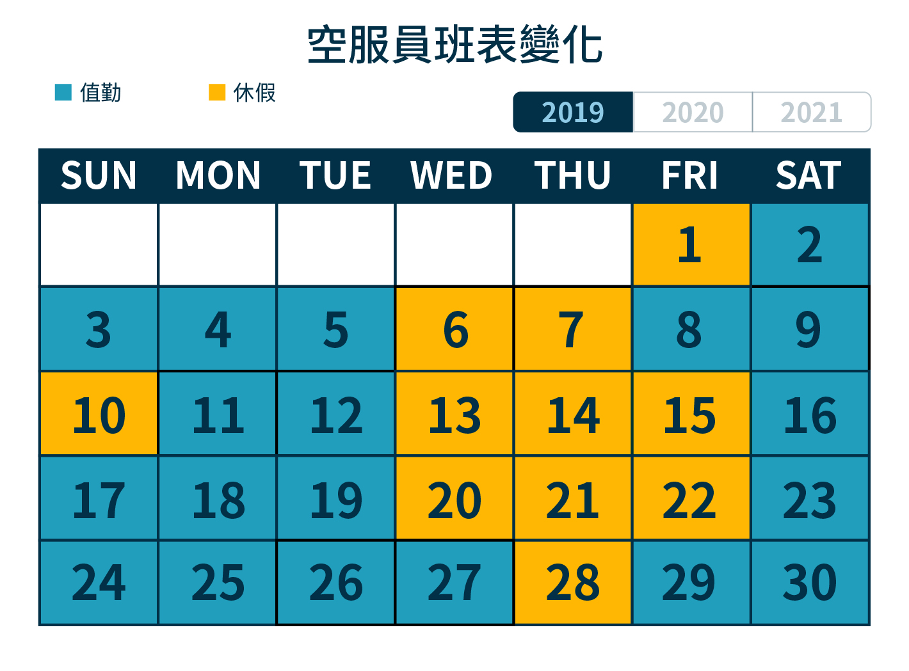
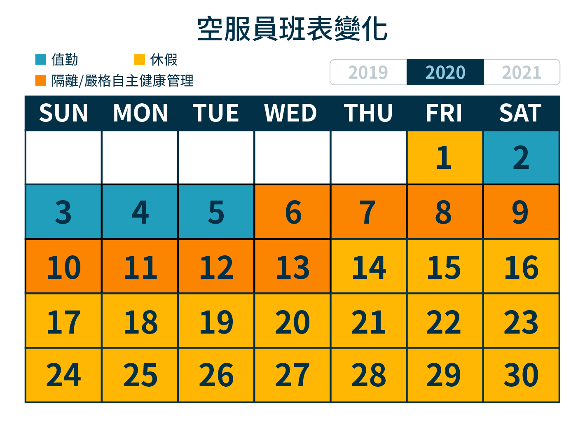
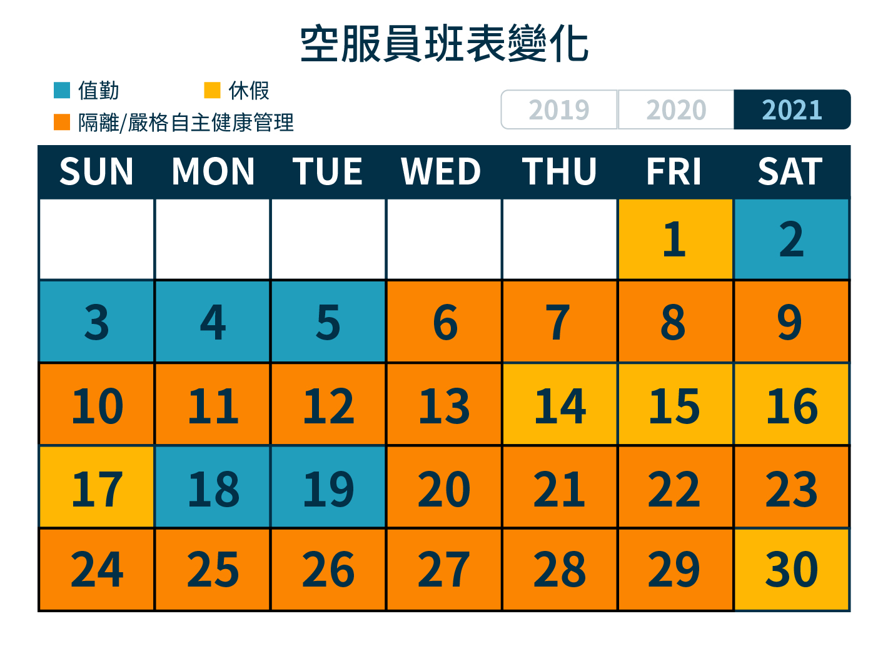

疫情衝擊航空業 機組人員執勤天數砍半
Covid-19席捲全球、重創各國經濟，航空業首當其衝。
國際航班驟減、機組人員放無薪假，疫情持續延燒，航空業期待復甦，似乎還需要一段時間。
空服員出勤少 隔離時間長
  
在國籍航空公司工作4年的空服員Emma(化名)表示，以前每個月大概可以飛2、3次長途航班、2次來回班。
疫情爆發後，班表就產生大幅變化，空服員的飛行時數，直接縮減成四分之一，每個月大概只能飛1次。
因為空服員的月薪分為底薪與外站津貼，外站津貼會隨著空服員的飛行時數而決定，航班減少使得空服員的薪水被大幅削減。
近期(2021年11月)則是疫情前的二分之一，每個月都只能飛1~2次左右，其他時間都在隔離或自主健康管理。
整體來說，一次的長途飛行除了出勤的4天，還包含5天的隔離及9天在家自主管理。總計8成以上的時間，只能待在室內空間不能出門。
Emma說，在華航機師群眾感染事件爆發時，大眾只看見少數不遵守規定的機組人員，事實上，9成9的組員都很遵守疾管署的規定。
一趟航程下來，很多機組人員都因為反覆地清洗、噴酒精，導致手部脫皮。只是，民眾不會看到這些畫面。
疫情持續延燒，距離航空業復甦、機組人員生活恢復正常，仍有一段距離。
文字:何汶、胡芸瑄、傅書軒 網頁設計:傅書軒
2021/12/13報導